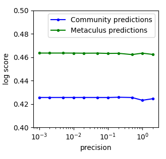
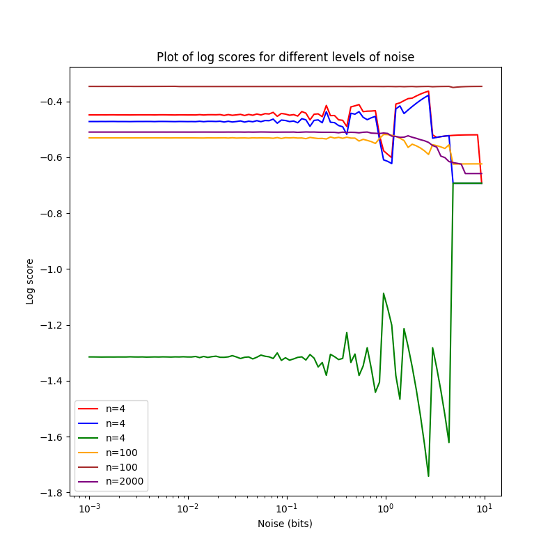
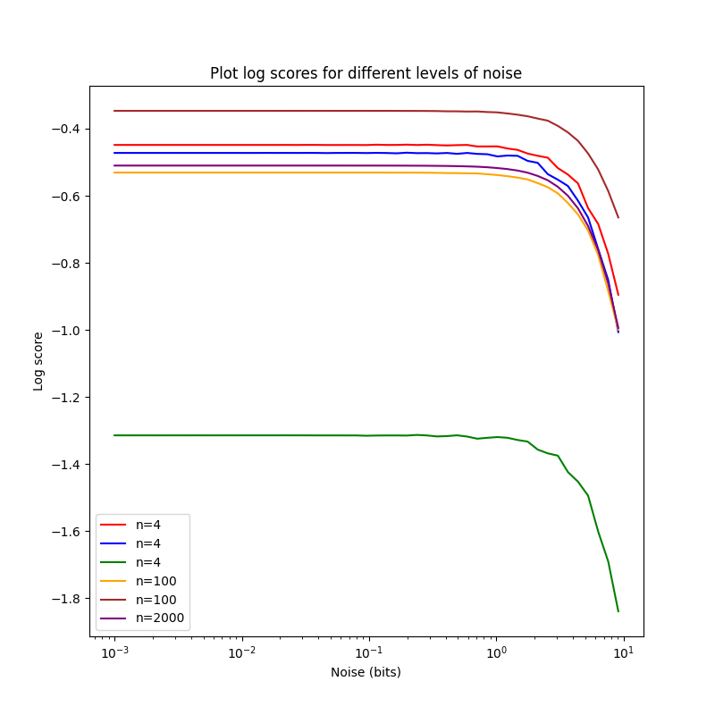
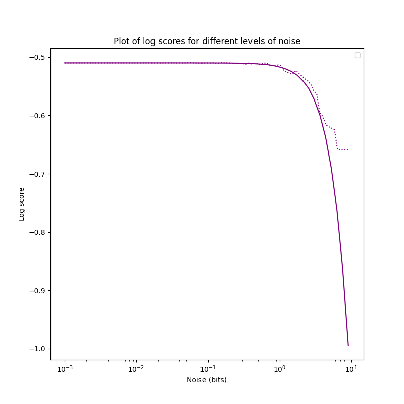
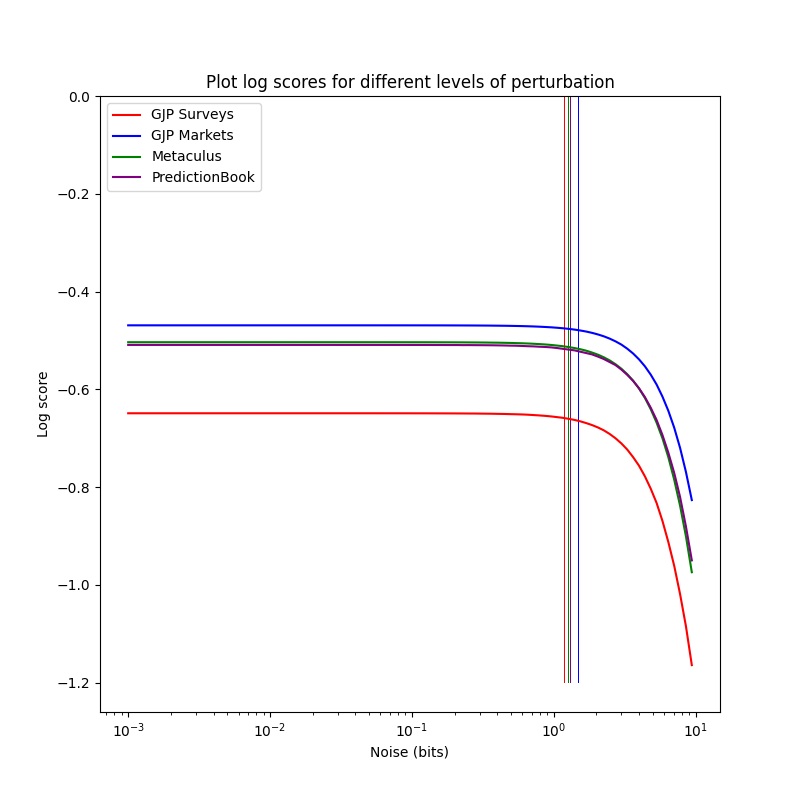
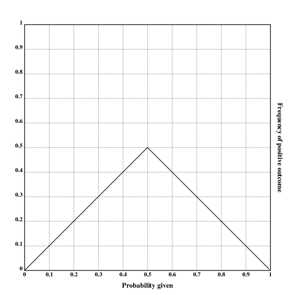

author: niplav, created: 2022-02-04, modified: 2023-09-19, language: english, status: finished, importance: 4, confidence: possible
I discuss proposals for a method that estimates how much predictive information additional degrees of precision in forecasts add and at which point additional precision is just noise, and investigate these proposals with empirical forecasting data. I furthermore describe desirable criteria such functions ought to fulfill. I conclude that methods based on rounding probabilities are confused as they treat probabilities on a linear scale, methods based on rounding odds or log-odds are better but also not reliable, and methods based on applying noise to log-odds are ok but sort of slow. Finding the maximal informative precision turns out to be tricky.
Maybe not just reinventing the wheel, but the whole bicycle.
Say we have a set of resolved forecasts and can display them on a calibration plot.
We can grade the forecasts according to some proper scoring rule, e.g. the Brier score or the logarithmic scoring rule, maybe even broken up by calibration and resolution.
But we can also ask the question: how fine-grained are the predictions of our forecaster? I.e., at which level of precision can we assume that the additional information is just noise?
Take, for example, a hypothetical forecaster Omar who always gives their forecasts with 5 decimal digits of precision, such as forecasting a "24.566% probability of North Korea testing an ICBM in the year 2022", even though if we look at their calibration plot (of sufficiently many forecasts), we see that they are pretty much random in any given interval of length 0.1 (i.e., their forecast with 15% and a forecast of 5% can be expected to resolve to the same outcome with equal probability). This means that 4 of the 5 decimal digits of precision are likely just noise!
Omar would be behaving absurdly; misleading their audience into believing they had spent much more time on their forecasts than they actually had (or, more likely, into correctly leading the audience into believing that there was something epistemically sketchy going on). It is certainly useful to use probability resilience, and not imprecision, to communicate uncertainty, but there is an adequate & finite limit to precision.
I believe something similar is going on when people encounter others putting probabilities on claims: It appears like an attempt at claiming undue quantitativeness (quantitativity?) in their reasoning, and at making the listener fall prey to precision bias, as well as an implicit claim at scientific rigour. However, not all precision in judgmental forecasting is false precision: At some point, if remove digits of precision, the forecasts will become worse in expectation.
But how might we confront our forecaster Omar from above? How might we estimate the level of degrees of precision after which their forecasts gave no more additional information?
Ideally we'd want to find a number that tells us, for a given set of (resolved) forecasts, the precision that those predictions display: Any additional digits added to the probability beyond this precision would just be noise.
Let us call this number the precision $ᚠ$ of a set of forecasts.
Let $\mathbf{D}=((f_1, o_1), \dots, (f_n, o_n)) \in ((0,1),\{0,1\})^n$
be a dataset of $n$ forecasts $f_i$ and resolutions $o_i$.
Then $ᚠ$ is simply a function that takes in such a dataset of
forecasts and produces a real number $ᚠ: ((0;1),\{0,1\})^n \rightarrow \mathbb{R}$,
so for example $ᚠ(D)=0.2$ for the forecasts and outcomes $D$
of some forecaster, or team of forecasters.
We call $ᚠ$ the precision function.
It is natural to assume that $ᚠ$ returns a probability:
after all, the input dataset has probabilities, and
when talking about Omar's calibration
plot
I was explicitely calling out the loss of accuracy in probability
intervals shorter than 0.1.
Furthermore, Friedman et al. 2018 also talk about precision in terms of probabilities (or rather "bins of probabilities"), we are all used to probabilities, probabilities are friends.
But this doesn't stand up to scrutiny: If we accept this, assuming we use probability "bins" or "buckets" of size 5%, then 99.99999% and 96% are as similar to each other as 51% and 54.99999%. But the readers familiar with the formulation of probability in log-odds form will surely balk at this equivalence: 99.99999% is a beast of a probability, an invocation only uttered in situations of extreme certainty, while 96%, 51% and 54.99999% (modulo false precision) are everyday probabilities, plebeian even.
And, in terms of precision, 54.99999% stands out like a sore thumb: while 99.99999% is supremely confident, it is not overprecise, since rounding up to 100% would be foolish; but with 54.99999%, there is no good reason we can't just round to 55%.
So precision should not be investigated on probabilities. Instead I claim that it should be calculated in log-odds space (which has an advantage over the odds form by being symmetric), where one moves in bits instead of probabilities. Since we want to make a statement how much we can move the probabilities around until the proper scoring rule we apply starts giving worse results, it is only natural to express the precision in bits as well. (Which can't be converted linearly into probabilities: moving from 50% to 75% or from 80% to 40% is one bit, but similarly moving from ~99.954% to ~99.977% is also a change of one bit). Instead one uses the logit function, and the logistic function to return to probabilities.
The assumption of expressing precision in bits naturally leads to two different algorithms.
These algorithms follow a common pattern:
$D$ of forecasts and resolutions.$σ$ to a minimum value.$σ$ as a parameter for the perturbation function $ఐ: ((0,1),\{0,1\})^n \times ℝ \rightarrow ((0,1),\{0,1\})^n$ so that $D'=ఐ(D, σ)$.$D'$.$σ$ is the correct level of precision, stop. This is the output of $ᚠ(D)$.$σ$.A technique explored
by
@tenthkrige explores rounding in
odds-form: The probabilities are converted into odds-form and there
rounded to the nearest multiple of the perturbation parameter $σ$.

Here, the precision of the community predictions looks like it is somewhere between 0.5 and 1, and the precision of the Metaculus prediction is around 0.25 and 0.5, but it's hard to tell without access to the measurements.
Log-odds rounding is pretty similar to odds-rounding.
Once a probability $p$ has been converted into log-odds
form $l_p$, then rounding with a perturbation $σ$ is
simply
$l'_p=σ \cdot \text{round}(l_p / σ)$.
Scoring the forecasts using the logarithmic scoring rule, one can then write this in a couple of lines of python code:
def logodds_rounded_score(forecasts, perturbation=1):
p=forecasts[1]
lo=logit(p)
rounded_lo=perturbation*np.round(lo/perturbation)
rounded_probs=logistic(rounded_lo)
return np.mean(logscore(forecasts[0], rounded_probs))
Full code for all algorithms is here.
One can then check whether everything is working nicely by applying the method to a couple of small (n=4,4,4,100,100,2000) toy datasets.
The smallest three datasets, all of n=4, are d1 (red in the chart),
d2 (blue in the chart) and d3 (green in the chart).
They are
d1=np.array([[1,0.8],[0,0.4],[0,0.65],[1,0.99]]).T
d2=np.array([[1,0.8],[0,0.4],[0,0.65],[1,0.9]]).T
d3=np.array([[0,0.8],[1,0.4],[1,0.65],[0,0.9]]).T
One notices that d2 is just a slightly less resolute & precise d1,
and d3 is pretty bad.

Now this is not… great, and certainly quite different from the data by tenthkrige. I'm pretty sure this isn't a bug in my implementation or due to the switch from odds to log-odds, but a deeper problem with the method of rounding for perturbation.
There are two forces that make these charts so weird:
If you decrease precision by rounding, you can actually make a
probability better by moving it closer to 0%/100%. If you have one
forecast with probability $p=0.75$ and the outcome $o=1$. Without
rounding, this has a log-score of ~-0.29. Setting $σ=0.3$ and rounding
in log-odds space and transforming back gives $p_r \approx 0.77$, with
an improved log-score of ~-0.26. When one sees the weird zig-zag pattern
for log-score, I believe that this is the reason. This is likely only
an issue in smaller datasets: In larger ones, these individual random
improving/worsening effects cancel each other out, and one can see the
underlying trend of worsening (as is already visible with the purple
plot for n=2000, and to a lesser extent brown & orange). Still, I count
this as a major problem with rounding-based methods. Friedman et al.
2018
note the same: "Coarsening probability estimates could actually improve
predictive accuracy if this prevents foreign policy analysts from making
their judgments too extreme".
Rounding very strongly rounds everything to 50%, so with strong
enough rounding every dataset has the same score. This has some
counter-intuitive implications: If you are worse than chance, perturbing
your probabilities more and more leads you reliably to a better score
(in the case of the log score, $\log(0.5) \approx -0.69$). One can also
see this in the plot above: All but one datasets end up with approximately
the same log score. This isn't an property that kills rounding, since
we in theory only care about the point where the perturbed score starts
diverging from the unperturbed score, but it is still undesirable.
That said, the method has one big advantage: It is quite fast, running ~instantaneously for even big datasets on my laptop.
But one can also examine a different paradigm: Applying noise to
the predictions. In our framework, this is concretely
operationalized by repeatedly ($s$ times) projecting the probabilities
into log-odds space, applying some noise with width $σ$ to them,
and then calculating the resulting probabilities and scoring them,
finally taking the mean of the scores.
There are some free parameters here, especially around the exact type of
noise to use (normal?
beta?
uniform?),
as well as the number $s$ of samples.
I have decided to use uniform noise, but for no special mathematical
reason, and adjust the number of samples by the size of the dataset
(with small datasets $n \approx 1000$, less with bigger datasets).
def noised_score(forecasts, perturbation=1, samples=100):
o=forecasts[0]
p=forecasts[1]
pert_scores=[]
for i in range(0,samples):
noised=logistic(logit(p)+np.random.default_rng(seed=time.monotonic_ns()).uniform(-perturbation/2,perturbation/2,len(p)))
pert_scores.append(logscore(o,noised))
return np.mean(pert_scores)
This gives a much nicer looking plot, with $n=500$ samples:

The plots are falling ~monotonously, with a worse score for increasing
noise, as expected. The score for d2 drops more quickly than the one
for d1, maybe because d2 is less precise than d1? I'm not sure.
Noising log-odds has a bunch of advantages: As we increase the perturbation, the score falls ~monotonically (which I conjecture to always be true in the limit of infinitely many samples), and doesn't converge to a specific value as rounding-based methods do.
This can be seen when comparing increasing perturbation with the
$n=2000$ dataset:

The disadvantage lies in the runtime: Taking many samples makes the method slow, but a small number of samples is too noisy to reliably detect when the the quality of forecasts starts dropping off. I think this is less of a problem with bigger datasets, but in the worst case I'd have to do a bunch of numpy-magic to optimize this further (or rewrite the code in a faster programming language, prototype in C here).
If the unperturbed dataset $D$ has a score $r=S(D)$, then we also need
to find a value for $σ$ with $D'=ఐ(D, σ)$ so that $r'=S(D')\not \approx r$,
with $r'<r$ (in the case of scoring rules where lower scores are worse)
or even that for all positive $δ \in ℝ$ and $D''=ఐ(D, σ+δ)$
it holds that $r''=S(D'')<r'$. That is, as we increase the perturbation
more and more, the score becomes worse and worse.
The easiest way to do this is to iterate through values for $σ$,
and once the difference between $r$ and $r'$ is too big, return the
corresponding $σ$. This method has disadvantages (the least-noteworthy
difference between $r$ and $r'$ is probably an arbitrary constant,
simply iterating requires a bunch of compute and only finds an upper
bound on a $σ$ which is "too much"), but shines by virtue of being
bog-simple and easy to implement. A more sophisticated method can use
binary search to zero in on a $σ$ that just crosses the threshold.
def linsearch_precision(forecasts, samples=100, low=10e-4, high=10, change=1.05, mindiff=0.01, mode='round'):
clean_score=pert_score=np.mean(logscore(forecasts[0], forecasts[1]))
p=low
while np.abs(clean_score-pert_score)<mindiff and p<high:
if mode=='round':
pert_score=logodds_rounded_score(forecasts, perturbation=p)
elif mode=='noise':
pert_score=noised_score(forecasts, perturbation=p, samples=samples)
p=p*change
return p
Unfortunately, this method doesn't really give reliable results for small sample sizes:
>>> precisions_1=[linsearch_precision(d1, change=1.05, mode='noise', samples=1000) for i in range(0, 5)]
>>> precisions_1
[1.2406168179333095, 1.302647658829975, 1.1815398266031518, 1.302647658829975, 1.302647658829975]
>>> np.mean(precisions_1)
1.2660199242052772
>>> np.var(precisions_1)
0.002361395506068271
>>> precisions_6=[linsearch_precision(d6, change=1.05, mode='noise', samples=200) for i in range(0, 5)]
>>> precisions_6
[1.302647658829975, 1.302647658829975, 1.302647658829975, 1.302647658829975, 1.302647658829975]
>>> np.mean(precisions_6)
1.302647658829975
>>> np.var(precisions_6)
0.0
It seems like smaller datasets need higher sample sizes to adequately assess the precision using noise-based methods.
But this does tell us that $ᚠ(d1)\approx 1.2$ bits, and
$ᚠ(d1)\approx 1.3$ bits.
The code can be changed to be faster, using binary search:
def binsearch_precision(forecasts, samples=100, low=10e-4, high=10, mindiff=0.01, mode='round', minstep=10e-4):
clean_score=np.mean(logscore(forecasts[0], forecasts[1]))
while high-low>minstep:
mid=(high+low)/2
if mode=='round':
pert_score=logodds_rounded_score(forecasts, perturbation=mid)
elif mode=='noise':
pert_score=noised_score(forecasts, perturbation=mid, samples=samples)
if np.abs(clean_score-pert_score)<mindiff:
low=mid
else:
high=mid
return mid
We can take advantage of the fact that we're not dealing the the indices of arrays here, so one can just divide by two as desired.
>>> bin_precisions_1=[binsearch_precision(d1, mode='noise', samples=1000) for i in range(0, 5)]
>>> bin_precisions_1
[1.2002208862304686, 1.2612499389648437, 1.2685734252929686, 1.3686610717773438, 1.2136472778320313]
>>> np.var(bin_precisions_1)
0.0035147788876175893
>>> bin_precisions_6=[binsearch_precision(d6, mode='noise', samples=200) for i in range(0, 5)]
>>> bin_precisions_6
[1.1916768188476563, 1.2160884399414063, 1.2173090209960937, 1.2124266967773438, 1.207544372558594]
>>> np.mean(bin_precisions_6)
1.2090090698242189
>>> np.var(bin_precisions_6)
8.664782133936837e-05
Now we can check whether the two methods give the ~same results:
>>> np.mean(precisions_1)
1.2660199242052772
>>> np.mean(bin_precisions_1)
1.2624705200195312
>>> np.mean(precisions_6)
1.302647658829975
>>> np.mean(bin_precisions_6)
1.2090090698242189
I suspect that this is simply a problem of small sample sizes, though: Increasing the sample sizes by 5× doesn't change problem at all:
>>> bin_precisions_6=[binsearch_precision(d6, mode='noise', samples=500) for i in
range(0, 10)]
>>> np.mean(bin_precisions_6)
1.2027841064453124
I'm kind of puzzled at this result, and not sure what to make of it. Maybe binary search biases the results downwards, while exponential search biases them upwards? We can check by changing the stepsize to linear:
>>> precisions_6=[linsearch_precision(d6, change=0.01, mode='noise', stepmode='lin', samples=200) for i in range(0, 5)]
>>> precisions_6
[1.2010000000000007, 1.2110000000000007, 1.2110000000000007, 1.2010000000000007, 1.2210000000000008]
>>> np.mean(precisions_6)
1.209000000000001
>>> np.var(precisions_6)
5.60000000000001e-05
This, prima facie, resolves our dilemma, and indicates that linear steps are better than exponential steps, and if speed is a problem, then binary search is better.
Rewriting the code to use noisy binary search, since the comparisons of scores are not reliable, might be a cool project.
But perhaps the entire idea of using a fixed value for divergence
is flawed? The divergence point needs to depend on the perturbation
parameter. I think I should instead assume there is a perfectly
calibrated, infinitely big dataset $D^{\star}$. How much does its
score drop if we perturb by $σ$? If $D$, perturbed, drops by half
(or whatever) as much as the score of $D^{\star}$ then we have found
our point.
A more sophisticated technique could try to estimate the elbow point of the declining curve of scores, but as far as I know there is no reliable method for doing so, nor is there a mathematical framework for this.
Equipped with some shaky heuristics about forecasting precision, one can now try to estimate the precision of different forecasting datasets (especially interesting should be comparing different platforms).
I will be doing so using the library iqisa.
import numpy as np
import pandas as pd
import iqisa as iqs
import iqisa.gjp as gjp
gjpmarket_fcasts=gjp.load_markets()
gjpsurvey_fcasts=gjp.load_surveys()
gjpmarket=gjpmarket_fcasts[['probability', 'answer_option', 'outcome']].dropna()
gjpsurvey=gjpsurvey_fcasts[['probability', 'answer_option', 'outcome']].dropna()
gjpmarket=np.array([np.int64(gjpmarket['answer_option']==gjpmarket['outcome']), gjpmarket['probability']])
gjpsurvey=np.array([np.int64(gjpsurvey['answer_option']==gjpsurvey['outcome']), gjpsurvey['probability']])
Now we can use the algorithms for estimating precision on the dataset:
import algorithms as prc
>>> prc.binsearch_precision(gjpsurvey, mode='noise', samples=10)
1.5017044067382812
>>> prc.binsearch_precision(gjpmarket, mode='noise', samples=10)
1.279558654785156
Apparently the markets were more precise than the survey
forecasts. Interesting. Now let's see Paul Allen's
Metaculus' precision.
import iqisa.metaculus as metaculus
metaculus_fcasts=metaculus.load_public_binary()
met_fcasts=met_fcasts_fcasts[['probability', 'answer_option', 'outcome']].dropna()
met_fcasts=np.array([np.int64(met_fcasts['answer_option']==met_fcasts['outcome']), met_fcasts['probability']])
>>> prc.binsearch_precision(met_fcasts, mode='noise', samples=10)
1.1941179809570313
Harsh words from Metaculus here… the precision is higher here, to be clear: The smallest perturbation for which the score becomes noticeably worse is smaller.
Same with PredictionBook:
import iqisa.predictionbook as predictionbook
pred_fcasts=predictionbook.load()
pred_fcasts=pred_fcasts[['probability', 'answer_option', 'outcome']].dropna()
pred_fcasts=np.array([np.int64(pred_fcasts['answer_option']==pred_fcasts['outcome']), pred_fcasts['probability']])
>>> prc.binsearch_precision(pred_fcasts, mode='noise', samples=10)
1.3198378295898436
The difference is quite small but noticeable, and the purple and the green plot overlap a bunch: Metaculus and PredictionBook aren't so different (?):

The precision tracks the unperturbed score to a high degree. I'm not sure whether this is an airtight relation or just commonly the case, perhaps someone will look into this.
Given the precision of some forecaster or forecasting platform, one can much easier perform sensitivity analysis (especially after correcting for miscalibration), as it allows to create a distribution over what a probability could reasonably mean, given some resolved past data from the same source.
Knowing the precision of some source of forecasts can also be nice to stave off criticism of false precision: One can now answer "No, you're wrong: I'm being wholly correct at reporting my forecasts at 1.2 bits of precision!". Surely no incredulous stares with that.
When evaluating the precision of a set of forecasts, all sources I know agree that perturbing the forecasts in some way and then observing how the forecasts worsen with more perturbation is the correct way to go about evaluating the precision of forecasts.
However, the existing attempts are based on rounding: Moving probabilities, odds or log-odds that are close together to the same number.
I believe that these approaches are not good: For small datasets they produce large oscillations in the score, not smooth declines, and they improve the scores of worse-than-random forecast datasets.
Instead, a better way to estimate the precision is to apply noise to the forecasts and track how the score worsens. This has the advantage of producing monotonically declining scores.
Testing the method of noising forecasts on real-world datasets shows that they have similar precisions.
Using a precision function $ᚠ$, perturbation function $ఐ$,
proper scoring rule $s$ and noise $σ$. These are very much me
thinking out loud.
$n=0$, $ᚠ(\emptyset)$ is undefined.$n=1$, $ᚠ(\mathbf{D})=1$: We are generally suspicious of any single forecast.
$\mathbf{D}$ contains an $f_i$ so that there is no other prediction with a probability within $[f_i-\frac{σ}{2}; f_i+\frac{σ}{2}]$, then $ఐ(\mathbf{D}, σ)=s(D)$. Yes, even if the set of forecasts is "dense" and non-random in other places.$n=2$, then it should hold for an $ε>0$ (but close to 0): $ᚠ(((ε, 0), (1-ε, 1)))=1$.
$n \rightarrow \infty$, and a sufficiently small $\frac{1}{n}>ε>0$, it should hold that $ఐ(((ε,0),(2ε,0), \dots, (\lfloor \frac{n}{2} \rfloor ε, 0), (\lceil \frac{n}{2} \rceil ε, 1), \dots, (nε, 1)), σ)$ is $0$ for $σ=1$ and $1$ for $σ \le 0.5$.$n \rightarrow \infty$, and a sufficiently small $\frac{1}{n}>ε>0$, and $r(p)$ being 1 with probability $p$ and 0 with probability $1-p$, it should hold that $ᚠ(((ε,r(ε)),(2ε,r(2ε)), \dots, (\lfloor \frac{n}{2} \rfloor ε, r(\lfloor \frac{n}{2} \rfloor ε)), (\lceil \frac{n}{2} \rceil ε, r(\lceil \frac{n}{2} \rceil ε)), \dots, (nε, r(nε))))=0$: If we have lots of datapoints, all perfectly calibrated, the score is nearly 0 at all precisions.$o_i$ uniformly from $\{0, 1\}$ with replacement, $ᚠ(\mathbf{D})=1$.$σ_1<σ_2$, $ఐ(\mathbf{D}, σ_1) \le ఐ(\mathbf{D}, σ_2)$ (smaller precision shouldn't lead to a greater score, since if you're uncalibrated at a precision of 10%, you're not going to be suddenly calibrated at a precision of 5%).
But what should be done about a calibration plot that looks like this?

There are two ways of arguing what, morally, the precision of the forecasts is:
$~1$ for every precision (assuming a large $n$) is that inferring the correct way to make forecasts from this calibration plot is trivial: With forecasts of probability $f_i>0.5$, re-assign a probability $f_i:=1-f_i$.$~1$ is that extending this rule would mean that at every kind of correction on the plot is valid, but there is no clear cutoff point that prevents us from applying this to individual predictions ("If you predict 99% instead of 43%, and 1% instead of 13%, and 1% instead of 23%, and […], then you achieve perfect resolution and calibration.")n forecasts and their resolutionsoutputoutput$\ge \mathcal{F}$